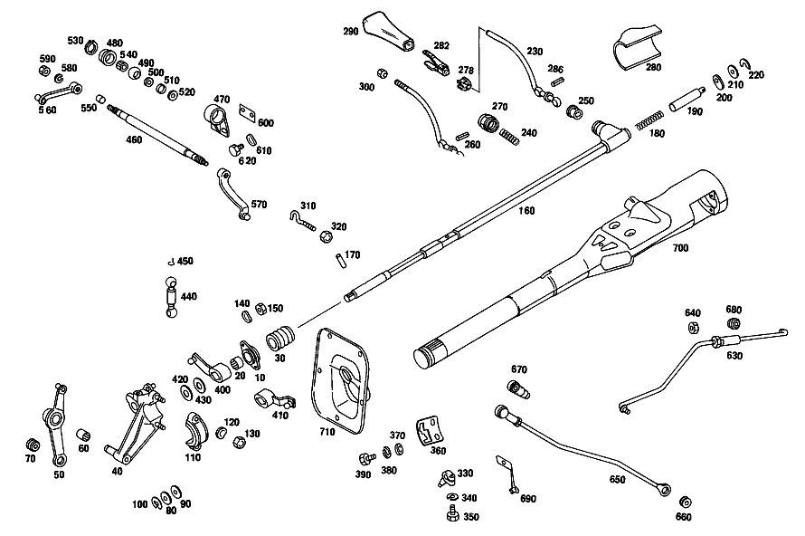

| № | Артикул | Название | Кол. | Примечание | Ограничение |
|---|---|---|---|---|---|
| 10 | A 116 260 11 94 | ОПОРА ПОДШИПНИКА | 1 | Z 10.971/01, Z 10.971/02, Z 10.971/03 | |
| 20 | A 001 981 84 10 | - Игольчатый подшипник | 1 | Z 10.971/01, Z 10.971/02, Z 10.971/03 | |
| 30 | A 116 268 02 97 | МАНЖЕТА | 1 | Z 10.971/01, Z 10.971/02, Z 10.971/03 | |
| 40 | A 116 260 15 94 | ОПОРА ПОДШИПНИКА | 1 | Рулевое управление: Влево Z 10.971/01, Z 10.971/02, Z 10.971/03 | |
| 50 | A 116 260 23 37 | РЫЧАГ | 1 | Рулевое управление: Влево Z 10.971/01, Z 10.971/02, Z 10.971/03 | |
| 60 | A 002 981 02 10 | Игольчатый подшипник | 1 | Рулевое управление: Влево Z 10.971/01, Z 10.971/02, Z 10.971/03 | |
| 70 | A 115 992 02 10 | втулка | 1 | Рулевое управление: Влево Z 10.971/01, Z 10.971/02, Z 10.971/03 | |
| 80 | N 900055 012001 | Пружинная шайба | 1 | Рулевое управление: Влево Z 10.971/01, Z 10.971/02, Z 10.971/03 | |
| 90 | A 312 990 03 40 | Диск | 1 | Рулевое управление: Влево Z 10.971/01, Z 10.971/02, Z 10.971/03 | |
| 100 | N 006799 010001 | Стопорная шайба | 1 | Рулевое управление: Влево Z 10.971/01, Z 10.971/02, Z 10.971/03 | |
| 110 | A 116 268 07 34 | КРЫШКА ПОДШИПНИКА | 1 | Z 10.971/01, Z 10.971/02, Z 10.971/03 | |
| 120 | N 000137 008206 | ШАЙБА ПРУЖИННАЯ | 2 | Z 10.971/01, Z 10.971/02, Z 10.971/03 | |
| 130 | N 000934 008013 | Гайка | 2 | Z 10.971/01, Z 10.971/02, Z 10.971/03 | |
| 140 | N 000137 006204 | Пружинная шайба | 2 | Z 10.971/01, Z 10.971/02, Z 10.971/03 | |
| 150 | N 000934 006013 | Гайка | - | Z 10.971/01, Z 10.971/02, Z 10.971/03 | |
| 150 | N 304032 006008 | Шестигранная гайка | 2 | Z 10.971/01, Z 10.971/02, Z 10.971/03 | |
| 160 | A 116 260 03 82 | ТЯГА ПЕРЕКЛЮЧЕНИЯ | 1 | Рулевое управление: Влево Z 10.971/01, Z 10.971/02, Z 10.971/03 | |
| 170 | A 115 991 03 01 | Палец | 1 | Z 10.971/01, Z 10.971/02, Z 10.971/03 | |
| 180 | A 120 993 21 01 | пружина | 1 | Z 10.971/01, Z 10.971/02, Z 10.971/03 | |
| 190 | A 115 268 04 39 | НАПРАВЛЯЮЩ. ЦАПФА | 1 | Z 10.971/01, Z 10.971/02, Z 10.971/03 | |
| 210 | A 186 990 69 40 | Диск | NB | Z 10.971/01, Z 10.971/02, Z 10.971/03 | |
| 220 | A 186 268 02 73 | предохранитель | 1 | Z 10.971/01, Z 10.971/02, Z 10.971/03 | |
| 230 | A 116 260 01 39 | РЫЧАГ ПЕРЕКЛЮЧЕНИЯ | 1 | Рулевое управление: Влево Z 10.971/01, Z 10.971/02, Z 10.971/03 | |
| 250 | A 115 268 07 50 | втулка | 1 | Z 10.971/01, Z 10.971/02, Z 10.971/03 | |
| 278 | A 123 268 01 90 | НАПРАВЛ. ЭЛЕМЕНТ | 1 | Z 10.971/01, Z 10.971/02, Z 10.971/03 [402] БОЛЬШЕ НЕ ПОСТАВЛЯЕТСЯ | |
| 280 | A 116 268 03 97 | Манжета | 1 | Рулевое управление: Влево Z 10.971/01, Z 10.971/02, Z 10.971/03 | |
| 282 | A 123 268 01 41 | ПРУЖИНА | 1 | Z 10.971/01, Z 10.971/02, Z 10.971/03 [402] БОЛЬШЕ НЕ ПОСТАВЛЯЕТСЯ | |
| 286 | N 001481 002508 | НАТЯЖН. ВТУЛКА | 2 | Z 10.971/01, Z 10.971/02, Z 10.971/03 | |
| 290 | A 123 268 07 42 | КНОПКА | - | Z 10.971/01, Z 10.971/02, Z 10.971/03 | |
| 290 | A 123 268 10 42 | КНОПКА | 1 | Z 10.971/01, Z 10.971/02, Z 10.971/03 | |
| 300 | A 115 268 01 72 | ГАЙКА | 1 | Z 10.971/01, Z 10.971/02, Z 10.971/03 | |
| 310 | A 116 990 01 38 | БОЛТ | 1 | Рулевое управление: Влево Z 10.971/01, Z 10.971/02, Z 10.971/03 | |
| 320 | N 000934 005008 | Гайка | 1 | M5 Z 10.971/01, Z 10.971/02, Z 10.971/03 | |
| 330 | A 112 268 00 39 | НАПРАВЛЯЮЩ. ЦАПФА | 1 | Z 10.971/01, Z 10.971/02, Z 10.971/03 | |
| 340 | A 094 990 68 10 | Пружинное кольцо | 1 | Z 10.971/01, Z 10.971/02, Z 10.971/03 | |
| 350 | N 000933 006130 | Винт | 1 | Z 10.971/01, Z 10.971/02, Z 10.971/03 | |
| 360 | A 115 268 03 47 | Кулиса | 1 | Рулевое управление: Влево Z 10.971/01, Z 10.971/02, Z 10.971/03 | |
| 370 | N 000125 006421 | Шайба | 2 | Z 10.971/01, Z 10.971/02, Z 10.971/03 | |
| 380 | A 094 990 68 10 | Пружинное кольцо | 2 | Z 10.971/01, Z 10.971/02, Z 10.971/03 | |
| 390 | N 000933 006130 | Винт | 2 | Z 10.971/01, Z 10.971/02, Z 10.971/03 | |
| 400 | A 116 260 24 37 | РЫЧАГ | 1 | Рулевое управление: Влево Z 10.971/01, Z 10.971/02, Z 10.971/03 | |
| 410 | A 116 260 25 37 | РЫЧАГ | 1 | Рулевое управление: Вправо Z 10.971/01, Z 10.971/02, Z 10.971/03 | |
| 420 | A 116 268 01 76 | ШАЙБА | 2 | Z 10.971/01, Z 10.971/02, Z 10.971/03 | |
| 430 | A 115 990 02 48 | Пружинная шайба | 1 | Z 10.971/01, Z 10.971/02, Z 10.971/03 | |
| 440 | A 000 268 15 66 | ПОДПЯТНИК ШАРОВОЙ | 1 | Рулевое управление: Влево Z 10.971/01, Z 10.971/02, Z 10.971/03 | |
| 450 | N 071805 010400 | Защитный кронштейн | 2 | Z 10.971/01, Z 10.971/02, Z 10.971/03 | |
| 460 | A 111 268 07 32 | ВАЛ | 1 | Рулевое управление: Вправо Z 10.971/01, Z 10.971/02, Z 10.971/03 | |
| 470 | A 116 268 00 01 | КОРПУС | 2 | Рулевое управление: Вправо Z 10.971/01, Z 10.971/02, Z 10.971/03 | |
| 480 | A 111 268 00 86 | Резиновое кольцо | 2 | Рулевое управление: Вправо Z 10.971/01, Z 10.971/02, Z 10.971/03 | |
| 490 | A 111 991 00 29 | Шар | 2 | Рулевое управление: Вправо Z 10.971/01, Z 10.971/02, Z 10.971/03 | |
| 500 | A 180 268 00 76 | ШАЙБА | 4 | Рулевое управление: Вправо Z 10.971/01, Z 10.971/02, Z 10.971/03 | |
| 510 | A 111 997 10 40 | УПЛОТНИТ. КОЛЬЦО | 4 | Рулевое управление: Вправо Z 10.971/01, Z 10.971/02, Z 10.971/03 | |
| 520 | N 000988 010000 | Регулировочная шайба | 4 | Рулевое управление: Вправо Z 10.971/01, Z 10.971/02, Z 10.971/03 | |
| 530 | A 094 990 56 05 | Стопорное кольцо | 2 | Рулевое управление: Вправо Z 10.971/01, Z 10.971/02, Z 10.971/03 | |
| 540 | A 000 981 18 10 | Игольчатый подшипник | 2 | Рулевое управление: Вправо Z 10.971/01, Z 10.971/02, Z 10.971/03 | |
| 550 | A 112 991 03 40 | РАСПОРН. ТРУБКА | 1 | Рулевое управление: Вправо Z 10.971/01, Z 10.971/02, Z 10.971/03 | |
| 560 | A 114 260 00 81 | РЫЧАГ | 1 | Рулевое управление: Вправо Z 10.971/01, Z 10.971/02, Z 10.971/03 [402] БОЛЬШЕ НЕ ПОСТАВЛЯЕТСЯ | |
| 570 | A 116 260 02 81 | РЫЧАГ | 1 | Рулевое управление: Вправо Z 10.971/01, Z 10.971/02, Z 10.971/03 | |
| 580 | N 912004 007100 | Пружинное кольцо | 2 | Рулевое управление: Вправо Z 10.971/01, Z 10.971/02, Z 10.971/03 | |
| 590 | N 000934 007005 | Гайка | 2 | Рулевое управление: Вправо Z 10.971/01, Z 10.971/02, Z 10.971/03 | |
| 600 | A 115 462 27 39 | ДЕРЖАТЕЛЬ | 2 | Рулевое управление: Вправо Z 10.971/01, Z 10.971/02, Z 10.971/03 | |
| 610 | N 000137 006204 | Пружинная шайба | 4 | Рулевое управление: Вправо Z 10.971/01, Z 10.971/02, Z 10.971/03 | |
| 620 | N 000933 006103 | Винт | - | Рулевое управление: Вправо Z 10.971/01, Z 10.971/02, Z 10.971/03 | |
| 620 | N 304017 006018 | Винт с 6-гранной головкой | 4 | M6X12 Рулевое управление: Вправо Z 10.971/01, Z 10.971/02, Z 10.971/03 | |
| 630 | A 116 260 24 33 | ТЯГА ПЕРЕКЛ. ПЕРЕДАЧ | 1 | Рулевое управление: Влево Z 10.971/01 [402] БОЛЬШЕ НЕ ПОСТАВЛЯЕТСЯ | |
| 640 | N 070616 010004 | - Гайка | 1 | Рулевое управление: Влево Z 10.971/01, Z 10.971/02, Z 10.971/03 | |
| 650 | A 116 260 41 33 | ТЯГА ПЕРЕКЛ. ПЕРЕДАЧ | 1 | Рулевое управление: Вправо Z 10.971/01 | |
| 660 | A 115 992 01 10 | - ВТУЛКА | - | Рулевое управление: Вправо Z 10.971/01, Z 10.971/02, Z 10.971/03 | |
| 660 | A 210 992 00 10 | - втулка | 1 | Рулевое управление: Вправо Z 10.971/01, Z 10.971/02, Z 10.971/03 | |
| 670 | A 000 991 09 22 | - ПОДПЯТНИК ШАРОВОЙ | - | Рулевое управление: Вправо Z 10.971/01, Z 10.971/02, Z 10.971/03 | |
| 670 | A 000 991 38 22 | - Шаровой подпятник | 1 | Рулевое управление: Вправо Z 10.971/01, Z 10.971/02, Z 10.971/03 | |
| 680 | A 115 992 03 10 | Втулка подшипника | 1 | Рулевое управление: Влево Z 10.971/01, Z 10.971/02, Z 10.971/03 | |
| 690 | A 116 260 04 62 | ДЕРЖАТЕЛЬ | 1 | Рулевое управление: Влево Z 10.971/01, Z 10.971/02, Z 10.971/03 | |
| 700 | A 116 460 45 16 | ТРУБЧАТ. СЕКЦИЯ РУЛ. КОЛ. | 1 | Рулевое управление: Влево Z 10.971/01, Z 10.971/02, Z 10.971/03 | |
| 710 | A 116 460 03 95 | - ПАНЕЛЬ | 1 | Рулевое управление: Влево Z 10.971/01, Z 10.971/02, Z 10.971/03 | |
| A 116 260 14 94 | ОПОРА ПОДШИПНИКА | 1 | Рулевое управление: Вправо Z 10.971/01, Z 10.971/02, Z 10.971/03 | ||
| A 116 260 22 37 | РЫЧАГ | - | Рулевое управление: Влево Z 10.971/01, Z 10.971/02, Z 10.971/03 | ||
| A 116 260 04 82 | ТЯГА ПЕРЕКЛЮЧЕНИЯ | 1 | Рулевое управление: Вправо Z 10.971/01, Z 10.971/02, Z 10.971/03 | ||
| A 111 997 12 40 | Уплотнительное кольцо | 2 | Z 10.971/01, Z 10.971/02 | ||
| A 115 260 34 39 | РЫЧАГ ПЕРЕКЛЮЧЕНИЯ | - | Рулевое управление: Влево Z 10.971/01, Z 10.971/02, Z 10.971/03 | ||
| A 115 260 44 39 | РЫЧАГ ПЕРЕКЛЮЧЕНИЯ | - | Рулевое управление: Влево Z 10.971/01, Z 10.971/02, Z 10.971/03 [415] ПРИМЕЧ. ПО ЗАМЕНЕ ПРИМЕНИМО ТОЛЬКО ДЛЯ СТОЯЩИХ РЯДОМ ПОЗИЦИЙ | ||
| A 115 260 35 39 | РЫЧАГ ПЕРЕКЛЮЧЕНИЯ | - | Рулевое управление: Вправо Z 10.971/01, Z 10.971/02, Z 10.971/03 | ||
| A 115 260 45 39 | РЫЧАГ ПЕРЕКЛЮЧЕНИЯ | 1 | Рулевое управление: Вправо Z 10.971/01, Z 10.971/02, Z 10.971/03 | ||
| A 123 268 00 90 | НАПРАВЛ. ЭЛЕМЕНТ | - | Z 10.971/01, Z 10.971/02, Z 10.971/03 | ||
| A 116 268 04 97 | Манжета | 1 | Рулевое управление: Вправо Z 10.971/01, Z 10.971/02, Z 10.971/03 | ||
| A 123 268 00 41 | ПРУЖИНА | - | Z 10.971/01, Z 10.971/02, Z 10.971/03 | ||
| A 115 268 14 42 | КНОПКА | 1 | Z 10.971/01, Z 10.971/02, Z 10.971/03 | ||
| A 123 268 01 42 | КНОПКА | - | Z 10.971/01, Z 10.971/02, Z 10.971/03 | ||
| A 116 990 02 38 | БОЛТ | 1 | Рулевое управление: Вправо Z 10.971/01, Z 10.971/02, Z 10.971/03 | ||
| A 116 268 00 47 | КУЛИСА | 1 | Рулевое управление: Вправо Z 10.971/01, Z 10.971/02, Z 10.971/03 | ||
| A 115 260 82 37 | Рычаг | - | Рулевое управление: Вправо Z 10.971/01, Z 10.971/02, Z 10.971/03 [415] ПРИМЕЧ. ПО ЗАМЕНЕ ПРИМЕНИМО ТОЛЬКО ДЛЯ СТОЯЩИХ РЯДОМ ПОЗИЦИЙ [002] ИСПОЛЬЗ.СТАР.НОМЕР ДЕТАЛИ ПРИ ШАССИ 116.020 034763 116.024,025 037597 116.028,029 024998 116.032,033 032312 | ||
| A 000 268 13 66 | ПОДПЯТНИК ШАРОВОЙ | - | Рулевое управление: Вправо Z 10.971/01, Z 10.971/02, Z 10.971/03 [415] ПРИМЕЧ. ПО ЗАМЕНЕ ПРИМЕНИМО ТОЛЬКО ДЛЯ СТОЯЩИХ РЯДОМ ПОЗИЦИЙ [002] ИСПОЛЬЗ.СТАР.НОМЕР ДЕТАЛИ ПРИ ШАССИ 116.020 034763 116.024,025 037597 116.028,029 024998 116.032,033 032312 | ||
| A 000 268 12 66 | Шаровой подпятник | 1 | Рулевое управление: Вправо Z 10.971/01, Z 10.971/02, Z 10.971/03 | ||
| A 116 260 03 81 | РЫЧАГ | - | Рулевое управление: Вправо Z 10.971/01, Z 10.971/02, Z 10.971/03 [002] ИСПОЛЬЗ.СТАР.НОМЕР ДЕТАЛИ ПРИ ШАССИ 116.020 034763 116.024,025 037597 116.028,029 024998 116.032,033 032312 | ||
| N 071805 010400 | Защитный кронштейн | 1 | Рулевое управление: Вправо Z 10.971/01, Z 10.971/02, Z 10.971/03 | ||
| A 116 260 32 33 | ТЯГА ПЕРЕКЛ. ПЕРЕДАЧ | - | Рулевое управление: Вправо Z 10.971/01 [002] ИСПОЛЬЗ.СТАР.НОМЕР ДЕТАЛИ ПРИ ШАССИ 116.020 034763 116.024,025 037597 116.028,029 024998 116.032,033 032312 | ||
| A 116 260 05 62 | ДЕРЖАТЕЛЬ | 1 | Рулевое управление: Вправо Z 10.971/01, Z 10.971/02, Z 10.971/03 | ||
| A 116 460 09 16 | ТРУБЧАТ. СЕКЦИЯ РУЛ. КОЛ. | - | Рулевое управление: Влево Z 10.971/01, Z 10.971/02, Z 10.971/03 | ||
| A 116 460 23 16 | ТРУБЧАТ. СЕКЦИЯ РУЛ. КОЛ. | - | Рулевое управление: Влево Z 10.971/01, Z 10.971/02, Z 10.971/03 | ||
| A 116 460 13 16 | ТРУБЧАТ. СЕКЦИЯ РУЛ. КОЛ. | 1 | Рулевое управление: Вправо Z 10.971/01, Z 10.971/02, Z 10.971/03 | ||
| A 116 460 07 95 | - ПАНЕЛЬ | 1 | Рулевое управление: Влево Z 10.971/01, Z 10.971/02, Z 10.971/03 [402] БОЛЬШЕ НЕ ПОСТАВЛЯЕТСЯ | ||
| A 116 460 04 95 | - ПАНЕЛЬ | 1 | Рулевое управление: Вправо Z 10.971/01, Z 10.971/02, Z 10.971/03 |
Позиций: 102 · подписано на схемах: 75 · колесо — плавный зум в курсор, перетаскивание — пан, двойной клик — зум, клик по артикулу — скопировать.